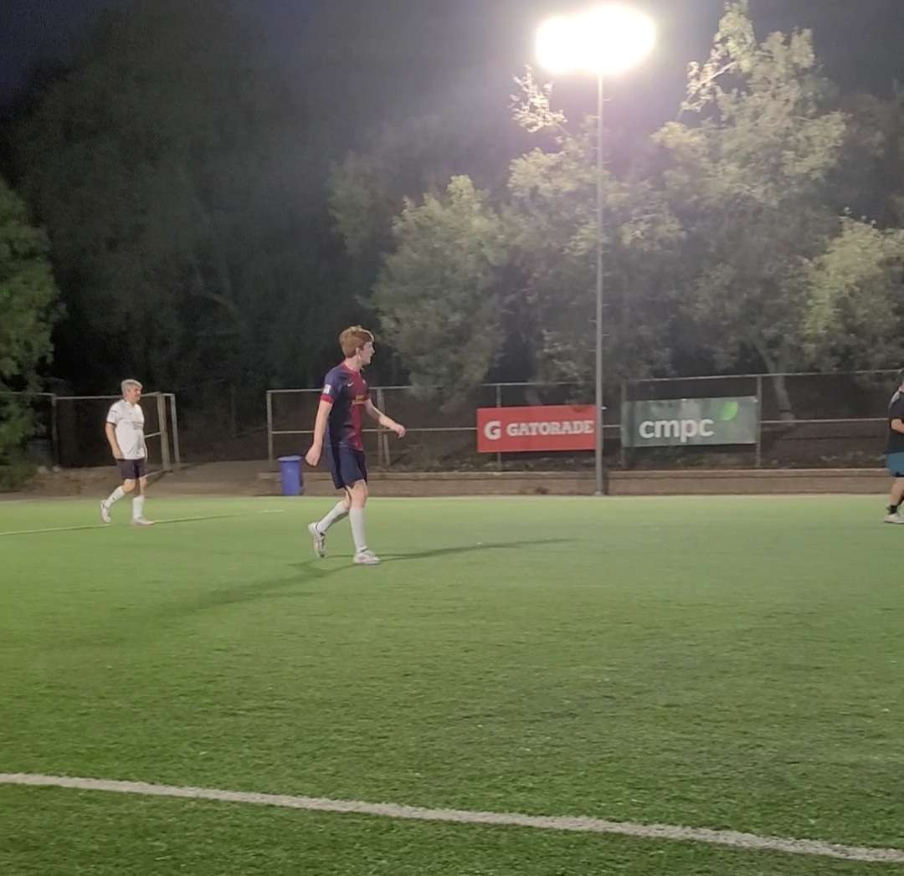

Ingeniería Civil en Ciencias de la Computación
(Computer Science Engineering) — Universidad de los Andes,
admitted
// about
About Me
Hello! My name is Agustín, born in Santiago, Chile. I'm currently a
student at Universidad de los Andes, about halfway through my degree.

Agustín playing some pickup football.// skills
Skills
Skills and how I picked them up
Skill
How & why I acquired it
English (fluent)
Formally, english was a part of my education since daycare. I was lucky enough to be enrolled in a bilingual daycare, followed by a
member of the Association of British Schools in Chile (ABSCH). Those courses then enabled me to be able to consume content via movies
and Youtube in english, which helped with the familiarization and eventual full adoption of the language.
Programming
Programming as a whole started in my final year of high school, where I opted to take a tech class over the alternatives. I was part of a small
group of 4 classmates during that year, but that was my first introduction to the concept in a more technical and practical sense.
Python
I learned Python through the various projects and courses required by the university.
SQL
I learned SQL via passing the Databases course.
C / C++
C and C++ were learned through the Low Level Programming course at college.
Teamwork skills
Among my hobbies I include both gaming and casual football games. Through both, I've learned to work alongside a team to maximize strengths and
develop strategies that best suit the current conditions for a common goal.
// projects
Projects
App Prototype — Association of British Schools in Chile (ABSCH)
The event consisted of travel of various students from multiple schools gathering for an event. This event consisted of the development of an app
that would incentivize "green" behaviours (recycling, reusing, etc). In groups of 3, we came up with and then presented the project to the rest of the
participants in english.
Throughout this experience, I learned to know how to do the role assigned to me while helping others with theirs, as well as teamwork alongside
people I'd only just met.
Technical Translation for TUSAN
In , State Grid Corporation of China (SGCC) aquired CGE (AKA General Electric Company). Under this new management,
naturally, issues arose regarding communication. One of these was the translation of documents regarding processes and guidelines for how certain
procedures should and should not be done. My father, a now former employee under CGE, tasked me with translating the work under his supervision.
The total of the documents to translate was about 150 pages. I used the automatic translation tool provided by Microsoft Word, but mistakes could
arise from the use of such a tool. So, I had to read through both versions of the document at once, and translate live in my head what was being said
and correct any mistakes in the translated english document. This was before AI was available in its current form, and so any words I didn't
understand I had to research, compare, and confirm with my father as to their applicability. In the end, though, the translation was good.